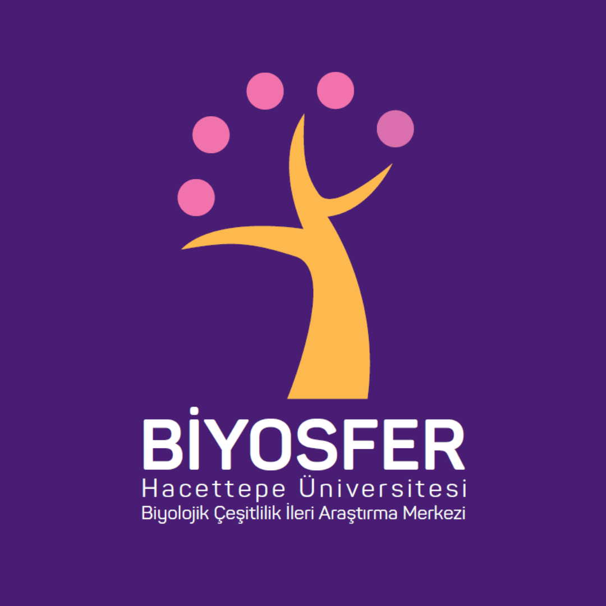
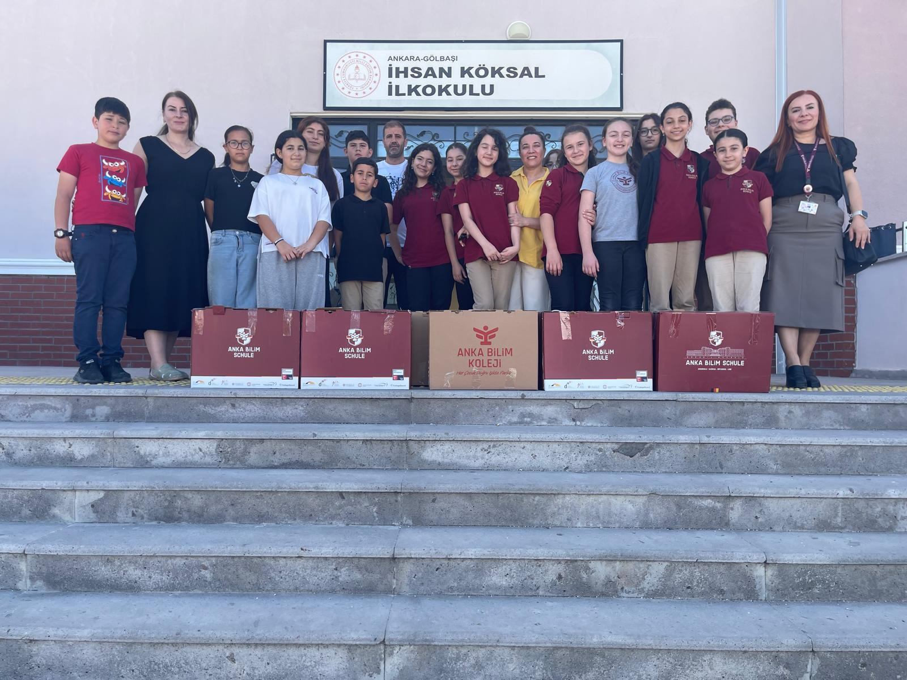
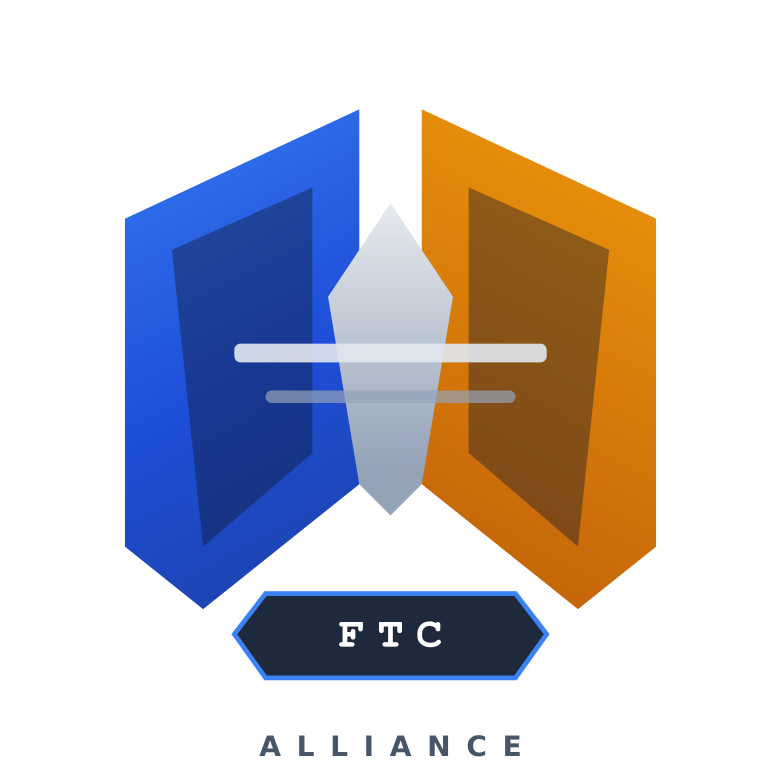

Asteria Robotics, teknolojiye ve mühendisliğe tutkuyla bağlı öğrenciler tarafından kurulmuş bir FIRST Tech Challenge (FTC) takımıdır. Amacımız yalnızca robotlar üretmek değil, aynı zamanda problem çözme, takım çalışması ve yenilikçi düşünme becerilerini geliştirmektir. Kurulduğumuz ilk günden itibaren, her sezonu bir öğrenme yolculuğu olarak görüyoruz. Tasarım sürecinden kodlamaya, mekanik geliştirmelerden saha stratejilerine kadar her aşamada birlikte çalışarak kendimizi sürekli geliştiriyoruz. Takımımız, farklı yeteneklere sahip öğrencilerin bir araya gelmesiyle oluşan güçlü bir yapıya sahiptir. Yazılım, mekanik, CAD, tasarım ve outreach alanlarında çalışan ekiplerimiz, ortak bir hedef için koordineli şekilde çalışır. Sadece robot geliştirmeye değil, aynı zamanda topluma katkı sağlamaya da önem veriyoruz. Eğitim etkinlikleri, STEM projeleri ve sosyal sorumluluk çalışmaları ile mühendisliği sınıf dışına taşıyoruz. Asteria Robotics olarak hedefimiz, her sezon daha ileriye gitmek, daha iyi çözümler üretmek ve FTC ruhunu en iyi şekilde temsil etmektir.
2025-2026 DECODE


Arkeolojik eserlerin doğru bir şekilde çıkarılmasını sağlar

Okulumuz bünyesinde düzenlenen bilim şenliğinde 850+ kişi katıldı, %97,9 STEM ilgi artışı gözlemlendi.

Gençlerde arkeoloji, tarih ve STEM alanına olan ilgiyi artırmayı amaçlayan eğitim projesi.

Mia Yaşam Merkezi'ndeki büyüklerimizle gerçekleştirilen kil ve STEM etkinliği.

Ülkemizin birçok bölgesindeki yeni FTC takımlarına 3 set mecanum şase desteği sağlandı.

Tarihi eserlerin en çok hasar gördüğü aşama olan taşıma sürecinde güvenliği sağlamak amacıyla tasarlanmıştır.

FTC ve FRC topluluğu için geliştirilen açık kaynaklı scouting uygulaması.

7. sınıf öğrencilerinin doğa ve biyolojik çeşitlilik hakkında bilgi edinmelerini sağlayan STEM gezisi.

İhsan Köksal İlkokulu ve Ortaokulu'na üçüncü yılına giren yıllık kitap bağışı projemiz.

Türk FTC takımları için oluşturulmuş forum ve topluluk platformu.